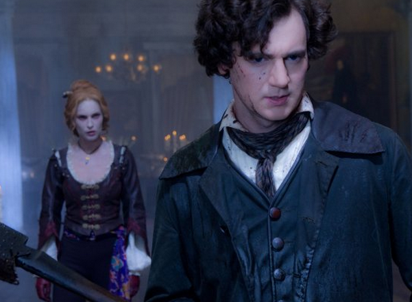
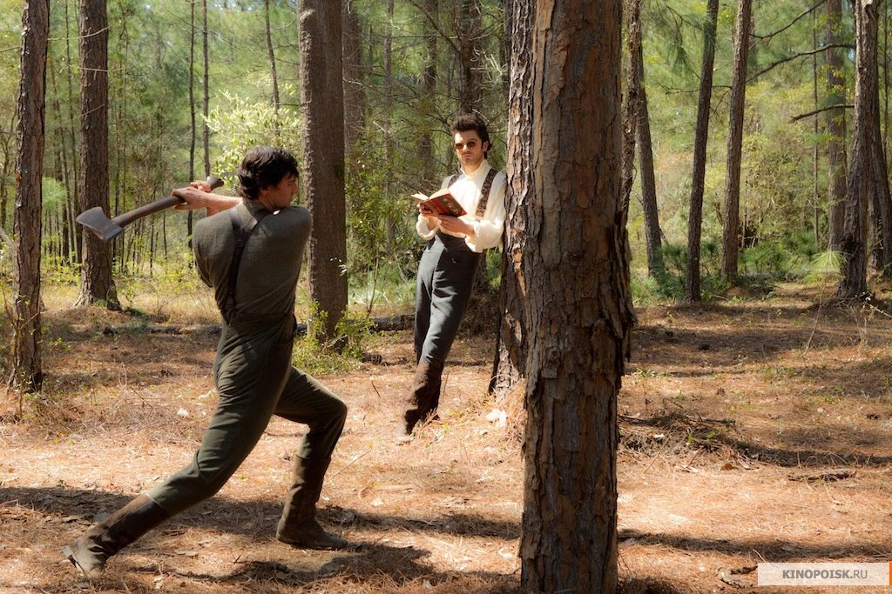
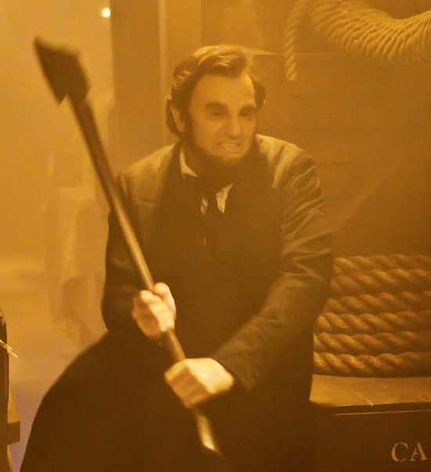

|
Last week, Abraham Lincoln: Vampire Hunter opened, and offered up a fun action
thriller using a familiar American icon sporting some modern, ass-kicking mixed martial
arts techniques against familiar, blood-sucking foes. To the casual viewer with no
pretensions or hang-ups about silly summer ax-murder flicks, it is a rip-roaring good
time: the cinematic equivalent to a bourbon hay-ride. Ostensibly about Lincoln's early
years and his path towards a vampire hunting career that would lead him to a life of
|

A young Abraham Lincoln (Benjamin Walker)
|
political advocacy against slavery and the undead, the film puts its foot on the gas and
doesn't let up until the final frame.
As a concept, it's absolutely brilliant. There's always been a lot of mystery
surrounding Abe's early years, a subject that the real Lincoln often dodged when
questioned about it. In his colossal three-part narrative The Civil War, Shelby
Foote said of our 16th President, "There were gaps in the story that even Herndon [an old
associate] could not fill, and other gaps that no one could fill, ever, though writers
were to make him the subject of more biographies than any other American." One time, when
questioned about his early years by a reporter, Abe replied with his characteristic
elusiveness, "Why, Scripps, it is a great piece of folly to attempt to make anything out
of my early life. It can all be condensed into a single sentence, and that sentence you
will find in Gray's Elegy: 'The short and simple annals of the poor.'"
For a writer with a creative, silly bend in their brain (novelist Seth Grahame-Smith),
this is practically a blank check--for the unknown portions of Abe's walkabout adolescence
and early youth open up a realm of fantastic opportunities, especially for one looking to
juxtapose American history with vampire lore. And while it is amusing, nay, a blast
watching Abe Lincoln ax the undead in a fashion that would make Gimli, son of Gloin,
proud, it's clear that most energies and considerations went into the action set pieces,
and not into detailed historical research.
And that's fair. If you go into Abraham Lincoln: Vampire Hunter looking for a
balanced, thoughtful portrayal of a historical topic, then you're either certifiably
insane, or very confused. Still, there were a surprising number of folks who were curious
about the film's accuracy, and as a person with not one, but two American History degrees,
your humble author often (to his delight) gets thrown these sorts of inquiries. So, just
to have a little fun, and with the understanding that this author believes that everyone
should see Abraham Lincoln: Vampire Hunter, regardless of the issues presented
today, I present for your consideration five things that the film got right, and five more
that it got horribly, terribly wrong.
What it got right
1. Abraham Lincoln was actually quite skilled with an ax, by all accounts. His Indiana
neighbors once recalled, "He can sink an ax deeper into wood than any man I ever saw,"
while another recounted, "If you heard him felling trees in a clearing, you would say
there were three men at work by the way the trees fell." In the film, Abe (Benjamin
Walker) mentions to Henry Sturgess (Dominic Cooper), his vampire-killing mentor, that he
prefers an ax as his primary weapon, as he's had a lot of experience splitting rails,
something the real Lincoln was indeed famous for. Thus, Abraham Lincoln slicing up dozens
|

Lincoln (Walker) illustrates the source
of his prowess with an axe
|
of vampires with an ax seems entirely appropriate considering the real man, and what the
record suggests of his actual physical abilities. Indeed, while Bruce Catton and other
revered Civil War historians never spoke about our 16th President felling bloodthirsty
creatures of the night along with stocks of timber, the stretch is an entertaining and
entirely appropriate one that is enough to make any history geek blush a little.
2. Lincoln's birth mother, Nancy Hanks Lincoln, died of milk sickness, formerly a
mysterious, unaccounted-for ailment that could easily be interpreted as a slow vampire
death in the grand tradition of gothic lore. In a somewhat clever move, the genuine
symptoms of Nancy's milk sickness (tremors, abdominal pain, vomiting, and delirium) are
used to illustrate her condition after a vampire attack, one that fuels Abe on his quest
to rid the world of the bloodthirsty creatures. Though modern science has since concluded
that milk sickness is the result of consuming dairy products from a cow that's eaten the
poisonous white snakeroot, theories of the era weren't much more sophisticated than the
diagnosis offered in this film. Indeed, on the frontier, before modern medical science,
what Nancy died from might very well have been considered the work of an evil entity, one
whose mysterious symptoms seemed to fit the whispered rumors concerning nefarious
creatures lurking in the shadows.
3. By the most basic standards of measurement, the film does a fine job portraying the
landscape and architecture of 1860's Washington, D.C., taking the time to offer mock-ups
of the unfinished Capitol Dome and Washington Monument in a most precise state. In the
film, the surrounding areas skirting the Capitol are shown to be marshy, largely
undeveloped tracts of swamp land, an entirely accurate depiction of a city that grew out
of a bog. Small details like these, and the attention given to Abe's facial hair, which
is accurately shown only after he assumes the Presidency, lend a little credence to a
picture that clearly isn't looking to impress the history buffs of the world whilst still
entertaining them.
4. Abraham Lincoln was a rough, coarse, hard-bitten man of the frontier, and knew a
thing or two about hands-on fighting. Take as an example one of Lincoln's first political
speeches, when a fight broke out in the crowd in front of the candidate, one Abe
personally broke up before getting back on his stump to finish his speech. Even earlier
than this, ol' Abe had earned a reputation as a man not to be trifled with, for at one
point he was challenged to and won an old-tyme wrestling match against a local gang of
|

Abraham Lincoln (Walker) on the attack
|
hoodlums. All of this speaks to a man who could easily be imagined as an ax-wielding
agent of truth and justice, for while the historical record doesn't suggest that Lincoln
used his physical abilities to any supernatural end, it does testify to the man's brawn
and impressive physical stature, one the film made good use of during the action
vignettes.
5. During the American Civil War, Lincoln practically lived in the telegraph office,
and was a hands-on micromanager for the Union cause. As a President, Abe routinely worked
on just three or four hours of sleep (often less), and when his armies were engaged in
heavy fighting, he'd often pace behind wireless operators waiting to transcribe messages
from the front: communiques ravenously devoured by a President hanging on every word.
During the latter third of Abraham Lincoln: Vampire Hunter, the title character is
indeed set up in the telegraph office, much like his historical counterpart, awaiting
every dispatch about the Gettysburg engagement with bated breath. This development fuels
the dramatic climax, for Lincoln rushes to get silver munitions to his troops before the
dramatic third-day push at Gettysburg; yet it also acts as one of the most glaring
historical gaps in the script, for the film treats the engagement in eastern Pennsylvania
in an embarrassingly inaccurate light, leading us to...
What the movie got so very, very wrong
1. Gettysburg was an accidental battle, and as an engagement was nebulous and
improvised. In this way, Lincoln could not have known it would last three days; indeed,
for those Union troops in Gettysburg on the morning of July 3, 1863, the third day of
battle, there was anything but an air of certainty about what would happen in the coming
hours. Though he'd come close to a breakthrough on the left, near the Round Tops, Robert
E. Lee had failed to penetrate the Union fish-hook line after the second day, and had
actually been advised by his chief subordinate, General Longstreet, to withdraw so as to
force a pursuit and subsequent engagement on ground of the Confederates' choosing. Though
the Rebels had indeed pushed the Federal troops back during the first day of fighting
(July 1), by the time Lincoln got word of the action, he had no idea how nasty a fight the
country was about to endure. Indeed, by the time Lincoln realized his Army of the Potomac
was facing off against three full infantry corps under the direct command of Lee, the
second day of fighting was finished and the issue would have seemed somewhat secure (an
assumption that the third day of fighting would not disrupt).
Now, if the movie wanted to show an astonishing Northern reversal at the hands of a
seemingly mystical, supernatural foe, I'm curious why they didn't use Stonewall Jackson's
May 2 flank attack at Chancellorsville, one that came as close to any assault during the
entire war in routing and annihilating an entire army. This Union defeat, one that came
against the same army faced at Gettysburg two months later, was the kind of thing that
could easily be assigned to some sort of vampiric invasion. If Chancellorsville was used
as the catalyst to start collecting silver, and the fight at Gettysburg just a few weeks
later was shown as the turning point for the war because it was the fight where the
vampire hordes were turned back, this humorous marriage of fact and fiction might have
worked. As it stands, the timeline and assumptions about the dynamics of the battle just
don't quite fit, for it seems a stretch to believe that Lincoln could have ordered,
manufactured, and delivered an entire army's worth of munitions in just twenty four hours.
2. Abraham Lincoln was tall...like really tall, son! Standing at an imposing 6'4",
Lincoln was a towering figure in an era where the average male height was roughly a foot
shy of his measure. In Abraham Lincoln: Vampire Hunter, the title character never
seemed to stand too far above his contemporaries, and aside from a quick remark about the
young man "growing," and another gag where Mary Todd stands on her hat to get a kiss,
Abe's height never seems to come into play. This is a curious omission considering all
the mileage the film could have gotten out of this entirely genuine feature, for in a
movie that has the President hacking the crap out of nearly every bloodsucker in sight,
the man's considerable reach-advantage never seems to add anything into the mix. Here and
there, when the framing of a shot doesn't include Lincoln's feet, he seems to stand a bit
taller than everybody else, yet this height difference is inconsistent and comes and goes
sporadically as the picture develops: never doing justice to a man that hovered above the
world like a modern N.B.A. center.
3. Pretty much everything about Mary Todd (Mary Elizabeth Winstead) was wrong.

Abraham Lincoln: Vampire Hunter mischaracterized
Mary Todd Lincoln quite significantly, even by the standards of a vampire
movie
|
Contrary to what's shown in the film, Abraham and Mary's first few encounters were
stilted, awkward occasions, ones the real Abe considered more of a chore rather than the
product of genuine affections. She most certainly DID NOT inspire Lincoln into politics,
and while she was indeed courted by Lincoln's future rival, Stephen Douglas, her
relationship with Abraham was one characterized by cold, arms-length encounters. During
the Civil War, Mary Todd did play the part of the dutiful First Lady, and did sometimes
accompany her husband on trips into the field to visit soldiers, yet she was hardly the
steely-eyed heroine presented in this film, and certainly never made any solo trips to the
front (at least not by any historical account).
No, in reality, Mary Todd was a short, squat woman who was often criticized for her
lavish spending and elaborate White House receptions during periods of severe national
distress. After the death of their son Tad (portrayed in the film as the victim of a
vampire attack), Mary was by all accounts inconsolable, and was hardly the steadfast and
resolute partner that's portrayed in Abraham Lincoln: Vampire Hunter. No, in real
life, following the death of Tad, the already eccentric and bi-polar Mary withdrew even
deeper into the shadows, and became obsessed with spiritual mediums to such an extent that
she developed into more of a liability to the President than an asset. Oh, and speaking
of Tad, I'll make this next one short and sweet...
4. Tad Lincoln had a cleft palate, and spoke with a lisp. In the film, though he's
only onscreen for a couple of minutes, and has just a few lines of dialogue, this medical
condition isn't accurately portrayed, something that could have easily been pulled off
with a speech coach and a little make-up. Come on, Bekmambetov! That one was easy!
5. After his mother's death, Abraham Lincoln was raised by his father's second wife,
Sarah Bush Johnson, and developed a very close and important bond with the woman that, by
Abe's own account, played a huge role in his development. Abraham would refer to Sarah as
"mother" throughout the rest of his life, a historical development that is glazed over in
Abraham Lincoln: Vampire Hunter, mostly as a way to give the title character more
motivation for his vampire hunting deeds. Now, as we discussed, while the movie did a
fine job mixing the historical evidence surrounding Nancy's death with vampiric lore, its
omission of Sarah in the face of a major mother-plot-point is an odd one, and something
that probably is going to give Lincoln-enthusiasts fits for decades.
Source: Warren Cantrell in Scene Stealers (June 27, 2012).
|